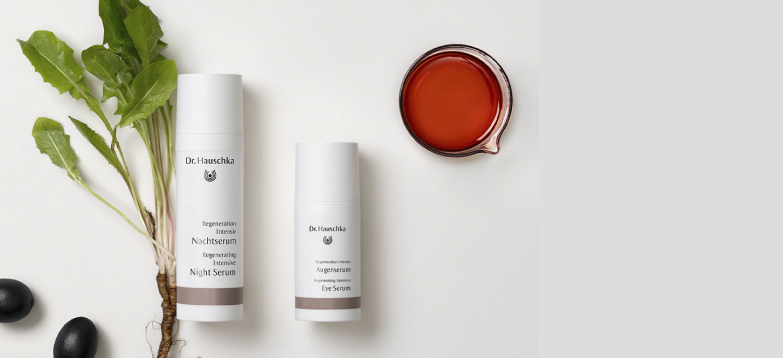

Ведущий интернет-магазин на российском рынке экологичной уходовой косметики Eco Comfort
Мы продвигаем бренды создающие эко-косметику и продаем ее. По своим потребительским свойствам эко-косметика не уступает обычной люксовой косметике. Не тестируется на животных и не содержит веществ животного происхождения. Упаковку можно переработать, либо она самостоятельно разлагается без вреда для природы. Благодаря разным травяным добавкам может восстанавливать и успокаивать кожу, а также оказывать противовоспалительный эффект. Она не создаёт эффект «маски» на лице и не забивает поры.